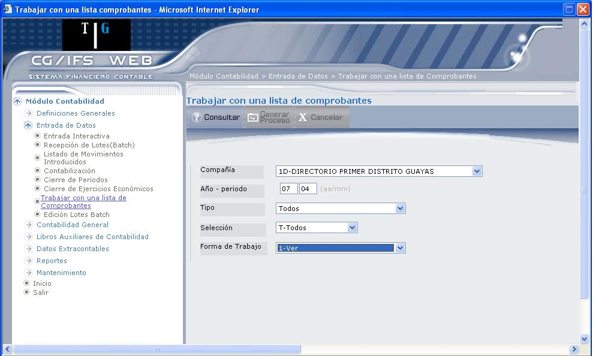
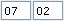
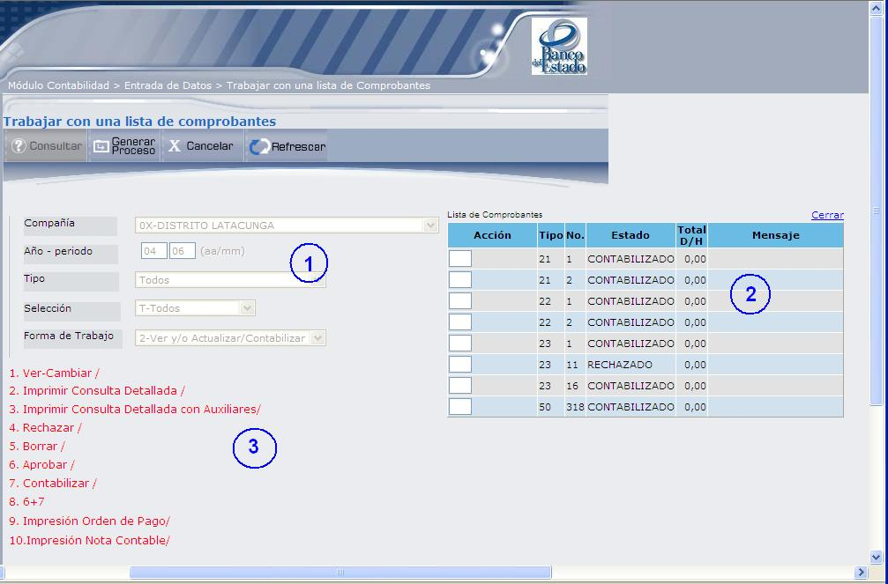
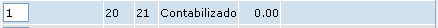
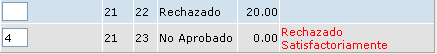
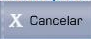

Trabajar con una lista de comprobantes
Para ingresar a esta opción se debe tener las siguientes autorizaciones:
- El usuario debe estar autorizado a de Movimientos para de Elemento Compañías (002-02/10) para poder consultar los movimientos.
- A de Movimientos para de Elemento Tipos de Comprobante (004 03/10) para poder consultar los movimientos.
Esta opción permite definir los comprobantes con los que se desea trabajar, mediante la pantalla que muestra 1.25.

Figura 1. Trabajar con una lista de comprobantes – Ingreso de parámetros.
Compañía:
Seleccione la compañía, presionando el botón ubicado al lado derecho del campo y que despliega una lista de compañías. Esta compañía debe estar activa y tener algún comprobante.
Año – Periodo:
Digite el año y el periodo al que pertenecen los comprobantes con los que desea trabajar. Por ejemplo:
Año 2007, Periodo 02, debe digitar 
Tipo:
Seleccione el tipo de comprobante, presionando el botón ubicado al lado derecho del campo. El sistema verifica que el Tipo de Comprobante seleccionado exista en CG/Web, que esté activo y que tenga algún Comprobante.
Selección:
Permite seleccionar por estado los comprobantes con los que se desea trabajar.
A: Permite visualizar la lista de los Comprobantes aprobados.
V: Permite visualizar la lista de los Comprobantes no – aprobados (validados).
E: Permite visualizar la lista de los Comprobantes contabilizados.
R: Permite visualizar la lista de los Comprobantes rechazados.
T: Permite visualizar la lista de todos los Comprobantes, sea cual sea su estado.
Forma de Trabajo:
Seleccione las acciones que se desea realizar sobre los comprobantes:
- Seleccione la opción “, si sólo desea visualizar o imprimir los Comprobantes de la lista.
- Seleccione la opción “, Ver y/o actualizar/contabilizar, en donde se realizan las siguientes funciones:
- Visualizar el detalle de los Comprobantes seleccionados.
- Modificar Comprobantes rechazados y/o no aprobados.
- Imprimir Comprobantes.
- Rechazar Comprobantes con estado no-aprobado o aprobado.
- Eliminar físicamente Comprobantes con estado rechazado sin tener que hacer necesariamente una Reorganización de Datos de CG/Web.
- Aprobar Comprobantes, con estado no aprobado pero cuadrado.
- Contabilizar Comprobantes de estado no aprobado pero cuadrado o aprobado.
- Seleccione la opción “, para ver y/o actualizar los comprobantes.
- Visualizar el detalle de los Comprobantes seleccionados.
- Modificar Comprobantes rechazados y/o no aprobados.
- Imprimir Comprobantes.
- Rechazar Comprobantes
- Eliminar Comprobantes
- Aprobar Comprobantes
BOTONES

Figura 1. Trabajar con una lista de comprobantes – Ingreso de opciones.
SECCIÓN 1:
Despliega los parámetros ingresados para listar los comprobantes, los campos en esta sección permanecen protegidos.
SECCIÓN 2:
Despliega la lista de comprobantes, según los parámetros ingresados. Al lado izquierdo se presentan los casilleros donde podrá ingresar la opción que desea realizar sobre el comprobante, como se muestra a continuación:

SECCIÓN 3:
Despliega las opciones que se pueden realizar sobre los comprobantes de la sección 2.
Las opciones que se despliegan en esta sección varían dependiendo de la “Forma de Trabajo” que haya escogido en el ingreso de parámetros.
Las posibles acciones que se pueden realizar son:
1. Ver:
Ver el Comprobante seleccionado, o realizar algún cambio sobre el mismo. Aparece la pantalla CUADRE DEL COMPROBANTE.
2. Imprimir Consulta Detallada/
Permite desplegar el comprobante contable en forma detallada en formato Report Viewer.
3. Imprimir Consulta Detallada con Auxiliares/
Permite desplegar el comprobante contable en forma detallada con las cuentas auxiliares, en formato Report Viewer.
4. Rechazar/
Permite rechazar los comprobantes aprobados o no aprobados. No podrá rechazar un comprobante contabilizado, al rechazar mostrará el mensaje: “Rechazado Satisfactoriamente”, como se muestra a continuación:

5. Borrar/
Permite borrar los Comprobantes rechazados sin necesidad de hacer una reorganización. Una vez ya ha sido borrado el Comprobante aparece en el campo Status la descripción “ya no existe”.
El trabajo de borrar todos los datos de un Comprobante, se ejecuta en batch o en interactivo dependiendo de que el nº de apuntes que figura en la cabecera del Comprobante sea mayor (batch) o menor o igual (interactivo) que el correspondiente parámetro de la instalación
Además si se intenta efectuar alguna acción sobre el Comprobante eliminado, aparece el mensaje: 0346-Este Comprobante ya no existe.
Al detectar que un Comprobante ya no existe inhibe cualquier posibilidad de selección.
6. Aprobar/
Digite 6, para aprobar los comprobantes rechazados o no aprobados.
7. Contabilizar/
Digite 7 para contabilizar los comprobantes aprobados.
8. 6 + 7 (Aprobar y Contabilizar)
Digite 8 para aprobar y automáticamente contabilizar los comprobantes aprobados.
9. Impresión Orden de Pago/
Anotar 9, para imprimir la orden de pago del comprobante.
10. Impresión Nota Contable/
Anotar 10, para imprimir contable del comprobante.

Created with the Personal Edition of HelpNDoc: Qt Help documentation made easy